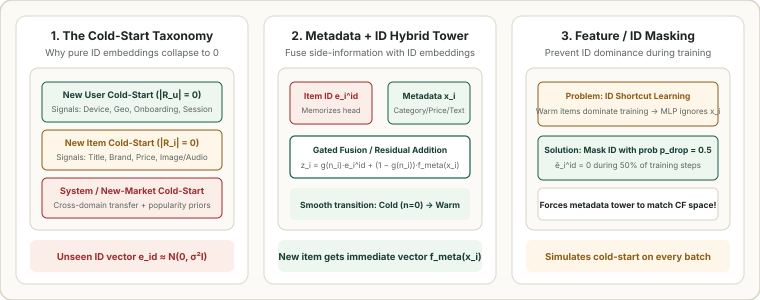

1. The Cold-Start Taxonomy: New Users, New Items & Metadata-Driven Two-Tower Hybrids
Collaborative Filtering models (Matrix Factorization, BPR, LightGCN) achieve remarkable accuracy on power users and popular items, yet they suffer from an Achilles' heel: the Cold-Start Problem. Every minute, thousands of new users sign up with zero click history ($|\mathcal{R}_u| = 0$) and thousands of new videos, products, or news articles are uploaded with zero impressions ($|\mathcal{R}_i| = 0$). Because an unseen ID has never received a gradient update, its embedding remains random noise $\mathcal{N}(\mathbf{0}, \sigma^2 I)$. This chapter formalizes the three cold-start regimes, Frequency-Gated Content–Collaborative Two-Tower Hybrids, and DropoutNet (ID Feature Dropout).

1. The Three Cold-Start Regimes
- New User Cold-Start ($|\mathcal{R}_u| = 0$): A first-time visitor or logged-out session has no historical interaction row in $R$. We must rely on context features (Geo/City, Device OS, Time of Day, Referral URL), optional onboarding topic pickers, and in-session real-time updates (updating the user vector after their very first click).
- New Item Cold-Start ($|\mathcal{R}_i| = 0$): Especially acute in short-form video (TikTok/Reels), news, and e-commerce marketplaces: if a new item is never recommended, it never gets clicked; if it never gets clicked, a pure CF model never recommends it! Breaking this deadlock requires rich item side-information $\mathbf{x}_i$ (category, brand, price, title text, visual/audio embeddings).
- System / New-Market Cold-Start: Launching a product in a brand-new country or vertical with neither user histories nor item histories, requiring cross-market transfer learning and smoothed popularity priors (Dirichlet / Bayesian empirical Bayes).
2. Frequency-Gated Content–Collaborative Hybrid Towers
How should an item tower combine a memorized collaborative ID embedding $\mathbf{e}_i^{\text{id}} \in \mathbb{R}^d$ (which excels when item $i$ has thousands of interactions) with a metadata MLP/Transformer projection $\mathbf{e}_i^{\text{meta}} = f_\phi(\mathbf{x}_i) \in \mathbb{R}^d$ (which works at $n_i = 0$)?
Rather than a static sum, production Two-Tower retrievers use Frequency-Gated Interpolation controlled by the item's historical impression/click count $n_i \ge 0$ and a smoothing hyperparameter $\tau > 0$ (e.g., $\tau = 50$):
- Strict Cold-Start ($n_i = 0$): The gate evaluates to $g(0) = 0$, so $\mathbf{z}_i = f_\phi(\mathbf{x}_i)$—the uninitialized random ID vector $\mathbf{e}_i^{\text{id}}$ is completely zeroed out!
- Warm-Up Transition ($n_i = \tau$): At $n_i = 50$ clicks, $g(50) = 0.50$, blending $50\%$ collaborative ID signal with $50\%$ content metadata.
- Power / Head Item ($n_i \gg \tau$): At $n_i = 5{,}000$ clicks, $g(5000) \approx 0.99$, allowing the fine-grained ID embedding $\mathbf{e}_i^{\text{id}}$ to memorize idiosyncratic collaborative patterns that metadata alone cannot explain.
3. The ID Shortcut Trap & DropoutNet (ID Feature Dropout)
What happens if you simply concatenate or sum $[\mathbf{e}_i^{\text{id}}, f_\phi(\mathbf{x}_i)]$ and train on logged clicks? Because $95\%$ of training impressions come from warm head/torso items ($n_i \gg 0$), the optimizer discovers a lazy shortcut: it memorizes $\mathbf{e}_i^{\text{id}}$ and leaves the metadata weights $f_\phi(\mathbf{x}_i)$ poorly trained! Then at serving time, when a cold item arrives with $\mathbf{e}_i^{\text{id}} = \mathbf{0}$, $f_\phi(\mathbf{x}_i)$ produces misaligned representations.
DropoutNet (Volkovs et al., NeurIPS 2017) fixes this via ID Feature Dropout: during training on warm items, we randomly mask the entire ID vector $\mathbf{e}_i^{\text{id}} \leftarrow \mathbf{0}$ with probability $p_{\text{drop}} \in [0.3, 0.5]$:
On the $50\%$ of training steps where $m_i = 0$, the item tower is forced to reconstruct the exact same user–item dot product using only the metadata branch $f_\phi(\mathbf{x}_i)$, guaranteeing that $f_\phi(\mathbf{x}_i)$ lives in the exact same geometric space as warm ID embeddings.
4. Worked Numerical Example: Cold-to-Warm Embedding Trajectory ($\tau = 50$)
Suppose a new running shoe is uploaded with metadata embedding $f_\phi(\mathbf{x}_i) = [0.80, 0.20]^\top$. As users interact with it, its learned ID embedding converges toward $\mathbf{e}_i^{\text{id}} = [0.50, 0.90]^\top$ (capturing cross-category affinity with marathon socks). Let's trace its composite representation $\mathbf{z}_i$ as $n_i$ grows from $0$ to $450$:
| Lifecycle Stage | Clicks $n_i$ | Gate $g(n_i) = \frac{n_i}{n_i + 50}$ | Metadata Weight $1 - g(n_i)$ | Fused Vector $\mathbf{z}_i = g\mathbf{e}_i^{\text{id}} + (1-g)f_\phi(\mathbf{x}_i)$ |
|---|---|---|---|---|
| Day 0 (Strict Cold-Start) | $0$ | $0.00$ | $1.00$ ($100\%$ Metadata) | $0.00[0.5, 0.9] + 1.00[0.8, 0.2] = \mathbf{[0.800, 0.200]}$ |
| Hour 6 (Early Warm-Up) | $10$ | $0.167$ | $0.833$ | $0.167[0.5, 0.9] + 0.833[0.8, 0.2] = \mathbf{[0.750, 0.317]}$ |
| Day 2 (50/50 Crossover) | $50$ | $0.500$ | $0.500$ | $0.500[0.5, 0.9] + 0.500[0.8, 0.2] = \mathbf{[0.650, 0.550]}$ |
| Week 2 (Warm Head Item) | $450$ | $0.900$ ($90\%$ ID) | $0.100$ | $0.900[0.5, 0.9] + 0.100[0.8, 0.2] = \mathbf{[0.530, 0.830]}$ |
5. Minimal PyTorch Implementation: Hybrid Item Tower with ID Dropout
import torch
import torch.nn as nn
import torch.nn.functional as F
class ColdStartHybridItemTower(nn.Module):
def __init__(self, num_items: int, meta_dim: int, emb_dim: int = 32, tau: float = 50.0, id_drop_prob: float = 0.5):
super().__init__()
self.id_emb = nn.Embedding(num_items, emb_dim)
self.meta_mlp = nn.Sequential(nn.Linear(meta_dim, 64), nn.ReLU(), nn.Linear(64, emb_dim))
self.tau = tau
self.id_drop_prob = id_drop_prob
def forward(self, item_ids: torch.Tensor, meta_x: torch.Tensor, click_counts: torch.Tensor) -> torch.Tensor:
e_id = self.id_emb(item_ids) # (B, d)
e_meta = self.meta_mlp(meta_x) # (B, d)
# Gate g(n_i) = n_i / (n_i + tau)
gate = (click_counts / (click_counts + self.tau)).unsqueeze(-1)
if self.training and self.id_drop_prob > 0.0:
# DropoutNet: zero out entire ID vector with probability id_drop_prob
keep_mask = (torch.rand(item_ids.size(0), 1, device=item_ids.device) >= self.id_drop_prob).float()
gate = gate * keep_mask
z_i = gate * e_id + (1.0 - gate) * e_meta
return F.normalize(z_i, p=2, dim=-1)
# Demo: compare cold item (n=0) vs warm item (n=200)
tower = ColdStartHybridItemTower(num_items=1000, meta_dim=16, emb_dim=8)
tower.eval()
ids = torch.tensor([42, 42])
meta = torch.ones(2, 16)
counts = torch.tensor([0.0, 200.0]) # Same item at n=0 (cold) vs n=200 (warm)
z = tower(ids, meta, counts)
print("Cold item vector (n=0): ", z[0].detach().numpy().round(3))
print("Warm item vector (n=200):", z[1].detach().numpy().round(3))